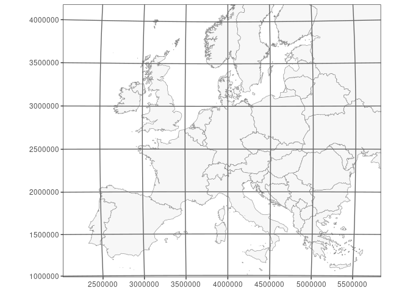
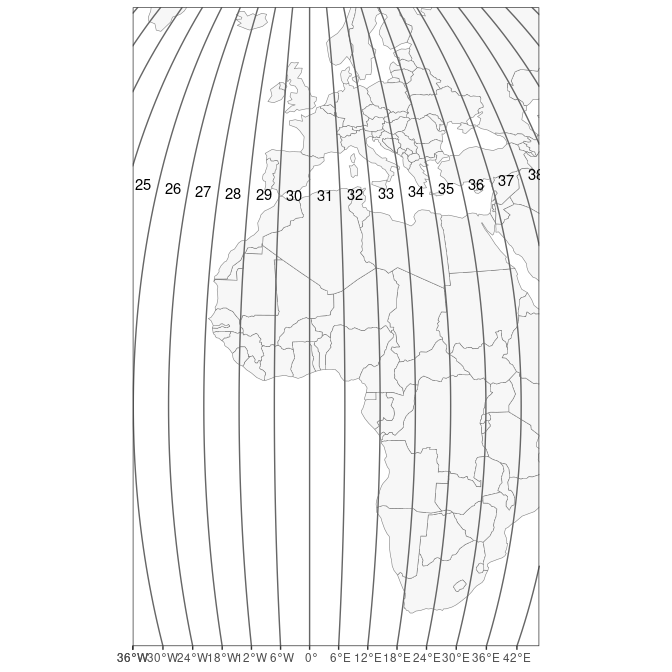
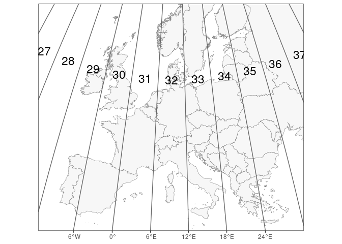
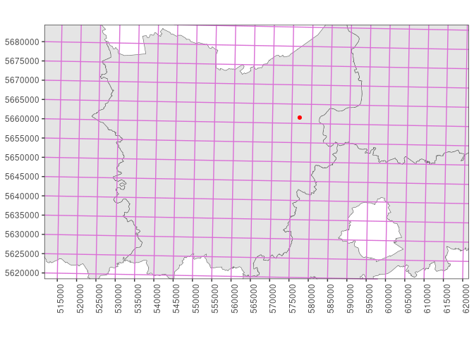

The UTM grid and the MGRS grid: not quite the same
Summary
Grids are widely used in biodiversity monitoring to define the basic spatial units for data collection, data processing or mapping. In this post I explain differences between the UTM and MGRS grids, provide references to their full definition and refer to some software implementations for MGRS.
Main points:
- The UTM grid and the MGRS grid outside the polar regions are both derived from the UTM (Universal Transverse Mercator) map projection system. Both grids have a world-wide coverage, but the polar regions are only covered by the MGRS grid. In the polar regions, the MGRS grid is derived from the UPS (Universal Polar Stereographic) map projection.
- The major divisions of the UTM grid are the UTM zones, defined by meridians that are 6° apart. The understanding of the term ‘UTM grid’ in this post only involves grid lines tied to the UTM coordinate system.
- In the area where UTM applies, the major partitions of the MGRS grid are the grid zones, which are a further division of UTM zones according to specific parallels, further amended by shifting the meridian borders of some grid zones. Grid zone borders generate extra cell clipping compared to the UTM grid.
- Apart from deviations and extra clips as a consequence of the grid zones, the MGRS grid cell pattern outside the polar regions matches that of the UTM grid.
- UTM grid references consist solely of digits (Arabic numerals), while
MGRS grid references are alphanumeric (combination of digits & Latin
characters). To illustrate this, following examples refer to the
Belgian point location used in the text:
- An UTM grid reference looks like
31.577019.5661520(meter precision) or31.577.5661(kilometer precision) and separators are needed (point, slash, space) if not applying localized simplifications. Quite some variations exist. - An MGRS grid reference looks like
31U ES 77019 61520(meter precision) or31U ES 77 61(kilometer precision), and the spacing is optional.
- An UTM grid reference looks like
- When decreasing the precision of a position, coordinates are to be rounded while in (UTM and MGRS) grid references the numeric parts representing easting and northing are to be truncated.
- Projected coordinate reference systems (CRSs) specify a geodetic datum so that coordinates can be linked to a physical location on the Earth’s surface. Likewise, you need to specify (and be aware of) the geodetic datum when using a (UTM or MGRS) grid reference for positioning.
Terminological notes
The NGA (National Geospatial-Intelligence Agency) Office of Geomatics (https://earth-info.nga.mil), part of the US Department of Defense, maintains definitions of the UTM map projection system and the MGRS grid (National Geospatial-Intelligence Agency, 2014a), as did its predecessor organisations since the inception of these systems in the 1940s (Buchroithner & Pfahlbusch, 2017; Department of the Army, 1956, 2001; Palombo, 2021; Snyder, 1987; Stott, 1977). Their usage of the term ‘UTM grid’ is not distinguished from the UTM map projection system, hence comes down to using numeric CRS coordinates in meters.
At least in the past, a ‘UTM grid’ reference system was implemented on civil maps, distinct from mere UTM CRS coordinates and with grid referencing rules to allow different levels of precision (see section UTM grid). Hence I prefer to maintain the distinction between the terms ‘UTM projection’ and ‘UTM grid’, also because the term ‘UTM grid’ is by some sources not distinguished from the ‘MGRS grid’, to which it is related.
Confusion between UTM and MGRS is compounded by the fact that some sources distinguish these grids but describe the division of UTM zones by 8° wide latitude bands as being part of the UTM map projection system, while others attribute the latitude bands to MGRS only. In this account I use the straightforward interpretation of the UTM grid—directly tied to the UTM map projection and a corresponding CRS—which has been implemented in civil maps (Stott, 1977) and which does not involve latitude bands nor alphanumeric grid references.
The entwinement between UTM and MGRS is clear from the fact that MGRS was first called ‘UTMREF’ (UTM reference) in the early 1940s and this went hand in hand with the implementation of the UTM map projection by military forces (first German Army, then US Army; Buchroithner & Pfahlbusch (2017)). To serve NATO purposes, a few years later the referencing system was extended to the polar regions, for which the UPS map projection was used. Later on, US Army sources make a clear distinction between UTM and MGRS (e.g. Department of the Army, 1956).
Introduction
In biodiversity monitoring the Military Grid Reference System (MGRS) is used a lot, although sometimes it is referred to as ‘the UTM grid’ (see Terminological notes). Example projects that use this spatial reference system are the Atlas Florae Europaea (Lampinen, 2013) and the European Invertebrate Survey (van Nieukerken, 1991; van Veen, 2000). In Belgium various faunistic inventories use this grid.
In this post I explain differences between the UTM and MGRS grid concept as adopted here, provide references to their full definition and refer to some software implementations for MGRS. The full definitions are not given here since the primary aim is to draw attention to important properties and differences. For the same reason, the UPS portion of MGRS is not further explained here. This post results from a limited literature study on these topics (see Bibliography).
Coordinate reference systems (CRSs) that are widely used, e.g. on regional, national or global level, have obtained standardized definitions in a coordinated manner (e.g. in the EPSG dataset). However, grid reference systems—associated with a projected CRS, a map projection 1, or sets of these—seem not as well globally coordinated.
A ‘grid’ in the context of maps refers to the horizontal and vertical lines chosen in the cartesian coordinate system of a projected CRS, usually in a regular manner (equal distance between all lines). It may also refer to the rectangular cells that emerge from these lines (Iliffe & Lott, 2008; Stott, 1977). The distance between the grid lines on a map depends on the used map scale.

A map of Europe in the projected CRS ‘EPSG:3035’ (‘ETRS89-extended / LAEA Europe’). The grid is from the same CRS.

The same map of Europe in the projected CRS ‘EPSG:3035’. The grid however is from ‘EPSG:3034’ (‘ETRS89-extended / LCC Europe’), reprojected in ‘EPSG:3035’.

The lines that represent parallels and meridians of a geographic CRS are called the graticule. This map still uses the projected CRS ‘EPSG:3035’ but displays the graticule of geographic CRS ‘EPSG:4258’ (‘ETRS89’), projected in CRS ‘EPSG:3035’.
UTM projection, UTM grid and MGRS grid
UTM projection
UTM (Universal Transverse Mercator) was developed during World War II (Buchroithner & Pfahlbusch, 2017).
UTM is a map projection system for the Earth, composed of 120 single Transverse Mercator map projections (conformal, transverse cylindrical projection) for 60 ‘UTM zones’ (numbered 1 - 60), each 6 degrees of longitude wide and reaching from 80°S to 84°N (originally 80°N; Department of the Army (1956)). 120 map projections are defined since for each UTM zone a separate map projection is needed for the northern and the southern hemisphere, the only difference being the false northing value. For example, the largest part of Belgium (and the whole of Flanders) is situated in UTM zone 31, and there the map projection ‘UTM zone 31N’ applies 2, with ‘N’ referring to the northern hemisphere.

A map centered on Greenwich, showing how meridians define the borders of UTM zones.

UTM zones in the European area. The UTM zones are narrower in the north.
UTM projects geographical coordinates (degrees) to cartesian coordinates (meters), so the result is XY coordinates (eastings and northings) like in other map projections, often resulting in high numbers, especially for Y as it covers the whole range of 0° to 80° or 84° latitude.
In the case of a lower precision, coordinates are rounded (not truncated) following the usual rounding rules of science and engineering (National Geospatial-Intelligence Agency, 2014a), as would happen in other coordinate systems.
As an example, we calculate the projected easting (X) and northing (Y)
of a point in Belgium using the sf package in R, at the millimeter
precision. The CRS uses the geodetic datum ‘ETRS89’ 3 and the ‘UTM
zone 31N’ map projection (CRS ‘EPSG:25831’).
library(sf)
point <- st_sfc(st_point(c(4.1, 51.1)), crs = "EPSG:4258")
st_transform(point, "EPSG:25831") |> st_coordinates() |> format(nsmall = 3, trim = TRUE)
## X Y
## [1,] "577019.527" "5661520.775"

A map in the Belgian CRS ‘EPSG:3812’ (‘ETRS89 / Belgian Lambert 2008’), showing provinces of Flanders. The point with geographical coordinates ‘51.1°N 4.1°E’, projected in ‘EPSG:3812’, is shown in red. It is situated in the province ‘Oost-Vlaanderen’. The superposed UTM grid lines and UTM coordinates are from the UTM CRS ‘EPSG:25831’ (‘ETRS89 / UTM zone 31N’)—reprojected in ‘EPSG:3812’—with lines every 5 km.
UTM grid
A UTM grid refers to the grid lines and the resulting grid cells portrayed on a map, using the cartesian coordinate system(s) obtained by UTM projection. These lines can for example be shown every 1, 2 or 10 km, depending on the map scale. This concept complies with the general description of a ‘grid’ in the context of mapping (see Introduction).
The UTM grid lines are labelled with the corresponding coordinate values, often expressed as kilometers except in the SE corner of the map where full coordinates are given in meters, as explained by Stott (1977), and by National Geospatial-Intelligence Agency (2014b) in the context of the MGRS system. In the case of kilometer grid labels, the (anterior) digits before the last two (principal) digits are printed in superscript as they generally do not change within the map. This approach matches general rules of printing the various rectangular grids that emerged since World War I.
Since the UTM projection system is composed of multiple Transverse Mercator projections, this pattern returns in the UTM grid. First of all, UTM grid cells are clipped alongside UTM zone borders and along the parallels of 80°S, 0° and 84°N, which define the borders of individual Transverse Mercator projections. Various smaller ‘grid cells’ 4 result from this, even though the majority of grid cells within a single Transverse Mercator projection are regularly ordered squares. Although each Transverse Mercator projection has a regular grid according to its cartesian coordinate system, any map projection that spans multiple UTM zones demonstrates that there is angle between the grids of different UTM zones, together constituting the UTM grid.
Both the occurrence of clipped grid cells and the angles between the constituting single grids make the UTM grid a relatively complex grid to use for various analytical purposes, especially when including clipped cells and when crossing the borders of a single Transverse Mercator projection.

UTM grid in the European area, using cells of 100 km. As UTM zones (in one hemisphere) each have their own map projection, an angle arises between grid lines in two different UTM zones.

UTM grid in the area around Belgium, using cells of 100 km.
The UTM grid referencing system to identify grid cells at a specific precision follows the following numerical syntax, as explained on civil maps that use it (Stott, 1977) 5:
[UTM zone number] [Truncated integer X-coordinate] [Truncated integer Y-coordinate]
Separators like points, slashes or spaces are needed since the number of digits can differ between easting (X) and northing (Y). The integers can be truncated at the required precision, hence representing 10p meters. As the coordinates are always truncated (not rounded) to integers, this effectively means that a UTM grid reference represents a square cell with a size that reflects the chosen precision, potentially clipped by the UTM zone border. For cells not clipped by the UTM zone border, this also means that their truncated coordinates match the UTM coordinates of their southwest corner; this holds for any precision.
Hence for the Belgian point location referred above with UTM coordinates
577019.527, 5661520.775, the UTM grid reference at 10-meter
precision is 31 57701 566152.
For localized usage, the above grid reference can be further shortened
by dropping the UTM zone number and anterior digits, e.g. if the context
is within the area of one map. In many areas such simplifications lead
to eastings and northings of equal length, so that separators are
sometimes dropped (for the example at 10-meter precision you could have:
77016152). Clearly, you can encounter variations of the UTM
grid reference syntax.
When not dropping prefixes, the UTM grid reference is unique at the global level if it is also clear which hemisphere—i.e. which of the two map projections per UTM zone—applies.6
The concepts of UTM grid portrayal on maps and UTM grid referencing with anterior and principal digits match those of other rectangular grids that have also long been in use on civil maps, and these are all named ‘civil’ grids by Stott (1977; see also Snyder, 1987).
Note that the UTM grid as explained here defines no subdivisions of the cartesian coordinate system by means of latitude bands, nor does it describe an alphanumeric geocoding system to uniquely identify further subdivisions. These topics are part of the Military Grid Reference System (MGRS) specification.
MGRS grid (Military Grid Reference System)
The Military Grid Reference System (MGRS) was designed during the 1940s in close association with the development of the UTM map projection system (see Terminological notes). It is used by NATO militaries for locating positions worldwide up to 1 m precision7. The MGRS specification is maintained by the NGA Office of Geomatics 8 (National Geospatial-Intelligence Agency, 2014a). Best use the foregoing reference when referring to the MGRS. Other resources describe the MGRS too, including Wikipedia contributors (2023).
Biodiversity monitoring and perhaps other projects sometimes claim to use UTM grid references, while it is more appropriate to speak about MGRS grid references. Reasons for this confusion are given in the Terminological notes.
The coordinate system obtained by UTM projection is used in the MGRS definition between 80°S and 84°N, and MGRS combines this with a UPS (Universal Polar Stereographic) projection to define its grid in the polar regions. In what follows, only the UTM portion of MGRS is considered.
Since the MGRS grid between 80°S and 84°N is based on the UTM grid, it inherits the complexities of the UTM grid already. The MGRS grid pattern between 80°S and 84°N has two important differences with the pattern of the UTM grid—apart from using a different referencing (geocoding) system:
- In MGRS the UTM grid cell pattern is further intersected by latitude bands of generally 8° wide. Intersecting UTM zones with latitude bands results in large cells called MGRS grid zones of generally 6° longitude by 8° latitude large. This intersection splits the UTM grid cells that overlap the dividing parallels, resulting in extra clipped cells compared to the UTM grid.
- In MGRS, some of the MGRS grid zones are wider or narrower than 6 longitudinal degrees. This has been done to avoid grid zone junctions in specific areas, e.g. Bergen and Oslo (Norway) belong to the same grid zone.

The intersection of the UTM grid by latitude bands of 8° wide forms the basis of the MGRS. This map does not include the subsequent changes to some MGRS grid zones in the north, e.g. in Norway.
Below the grid zone level, it is still the UTM grid pattern that drives the further subdivision in MGRS between 80°S and 84°N, down to the required precision, just as in other grid systems. Hence, with the exception of grid zones with shifted meridian borders, the MGRS grid still matches the UTM grid within the borders of one grid zone.
An important difference with UTM grid referencing however is that MGRS uses an alphanumeric grid reference instead of a numeric one as in civil grids. In MGRS, Latin characters are used in referencing both the applicable grid zone and the first subdivision thereof, as follows.
An MGRS ‘grid reference’ (sometimes called MGRS coordinate) is defined as:
[Grid Zone Designation] [Grid Square ID] [Truncated integer X-coordinate] [Truncated integer Y-coordinate]
As explained further, for the Belgian point location referred earlier
this comes down to 31U ES 77019 61520 at the 1 m precision,
which resolves to 31U ES 77 61 at 1 km precision.
The integer coordinates are truncated depending on the required precision, up to zero digits (precision 100 km), with the maximum9 of five digits per coordinate corresponding to a precision of 1 meter (i.e. the unit of the UTM coordinate system). So we get:
| precision (meter) | number of digits per coordinate | MGRS grid reference |
|---|---|---|
| 100 000 | 0 | 31U ES |
| 10 000 | 1 | 31U ES 7 6 |
| 1 000 | 2 | 31U ES 77 61 |
| 100 | 3 | 31U ES 770 615 |
| 10 | 4 | 31U ES 7701 6152 |
| 1 | 5 | 31U ES 77019 61520 |
Consequently, MGRS grid references need less digits per coordinate for 1 m precision than UTM grid references, and this is seen as an advantage of MGRS.10 Furthermore, the number of digits in both coordinates are equal and fixed for each precision—leading zeros need to be added at low values. Because both coordinates have an equal number of digits, the spaces can also be dropped; this is advised in a computational environment.

The ‘U’ latitude band goes from 48°N to 56°N. Two resulting MGRS grid zones are fully shown here: grid zones 31U (with most of Belgium) and 32U (with most of Germany).
In the UTM area of MGRS (between 80°S and 84°N), an MGRS grid reference is built as follows:
- The Grid Zone Designation (GZD), e.g.
31U, combines the UTM zone (31) with a letter code (U) that corresponds to a latitude band of generally 8° wide; hence each intersection defines the MGRS grid zone. The letter codes in the GZD represent the latitude bands and run from ‘C’ in the south to ‘X’ in the north, dropping ‘I’ and ‘O’ in order to not confuse with numeric digits. The X band is 12° high while all other bands are 8° high. - Each grid zone is further subdivided into grid squares (cells)
of size 100 km, using the UTM coordinate system to define the cell
border coordinates as multiples of 100 000 m. As grid zones get wider
towards the equator, more grid squares are present in zones near the
equator than in zones located much further north or south. The Grid
Square ID is a code of 2 characters that is unique within the grid
zone, e.g.
ES, with ‘E’—the ‘easting letter’— referring to a column and with ‘S’—the ‘northing letter’—referring to a row. These letters follow the Latin alphabet (excluding ‘I’ and ‘O’) in eastern and northern direction within a UTM zone, neglecting grid zone latitude borders and repeating the sequence as needed in northern direction. The starting letters at UTM coordinates0, 0determine the easting and northing letter sequences in a UTM zone, but depend on the UTM zone number as specified in the rules of the lettering scheme 11. - To specify locations with precision < 100 km, the truncated integer coordinates of the UTM grid reference are added, thereby dropping the digits that represent the hundred-thousands and higher. At this level, a precision can be chosen of 1, 10, 100, 1000 or 10 000 meters.
Since coordinates are always truncated (not rounded), resulting in 0 to
5 integers per coordinate, this effectively means that an MGRS grid
reference represents a square cell with its size reflecting the chosen
precision, although potentially clipped by the UTM zone border or the
latitude band. E.g. in 31U ES 7 6 X = 7 refers to the half-open
interval [70, 80) km.
What is the relation to coordinate reference systems (CRSs)?
Projected CRSs combine a map projection (such as ‘UTM 31N’) with a geodetic datum that relates actual positions on the Earth’s surface to the (unprojected, ellipsoidal) geodetic coordinate system, which also implies defining the ellipsoid and prime meridian. The geodetic datum is a property of the geodetic CRS associated with the projected CRS.
This also means that without a geodetic datum, you cannot determine the physical location on the Earth’s surface that corresponds to a pair of UTM coordinates or to a UTM or MGRS grid reference 12. See the CRS tutorial for more information.
Although the aim of MGRS is positioning and although it needs a compound CRS for its implementation, MGRS is a geocoding standard, not a map projection or a CRS as it adds complexity on top of a compound CRS.
In Belgium, the most relevant UTM CRSs for UTM zone 31 are:
- ETRS89 / UTM zone 31N (
EPSG:25831) - WGS 84 / UTM zone 31N (
EPSG:32631) - ED50 / UTM zone 31N (
EPSG:23031) which was applied in older topographic maps
Run sf::st_crs("EPSG:25831") in R to inspect the WKT string.
Distribution of the MGRS grid
The NGA Office of Geomatics distributes worldwide WGS 84 vector layers of MGRS grid polygons up to 1 km precision.
The UF Geoplan Center provides an MGRS-data site that serves as a library for MGRS data and information, including geospatial layers.
The match of these layers with any WGS 84 UTM CRS and with the WGS 84 graticule can be easily verified post-hoc.
Criticisms about the MGRS
Criticisms about the MGRS are mainly related to the complexity of the system itself.
- The geocoding system is quite excentric compared to CRSs, especially in current times where computing power is available and handling long numeric coordinates is automated and mathematically simpler.
- The complexity may be a source of mistakes. A renowned geodesist has advocated on the PROJ mailing list to not use the MGRS outside of the United States.
The National Geospatial-Intelligence Agency (2014a) advises:
Because various characteristics of MGRS are unhelpful to analytical work (see Subsection 11.8), this document suggests (but does not mandate) the following division of labor between MGRS and UTM/UPS when both are under consideration. UTM/UPS should be be used for calculations, analytical work, and storage & retrieval of geographic information; MGRS should be limited to notations on maps and charts, displays on end-user devices and person-to-person or person-to-machine communication.
Software implementations
MGRS and corresponding conversion methods have not been implemented in PROJ because of the technical non-fit.
They have been implemented in geospatial software though. The following list provides open-source implementations and may be incomplete:
- the GEOTRANS executables and C libraries of the NGA Office of Geomatics. They provide various coordinate conversions and transformations.
- the C++ library GeographicLib.
It grew from a desire to improve on the GEOTRANS package for
transforming between geographic and MGRS coordinates. GeographicLib
also provides utilities that can be run in a shell environment, such
as
GeoConvertfor converting coordinates to or from MGRS. These utilities also have an online implementation. - a silent (unexposed) implementation as C code inside the GDAL driver for NITF, an imagery format of the NGA Geospatial-Intelligence Standards Working Group (GWG).
- the R package mgrs which uses GDAL’s MGRS implementation in the NITF-driver.
- the Python package
mgrs(PyPi / conda-forge) which uses the GEOTRANS C library. - the QGIS plugin Lat Lon Tools by the US National Security Agency (code repo). It provides several geoprocessing algorithms, which can also be accessed outside the QGIS GUI, e.g. from R 13. The plugin also provides a GUI for easy coordinate conversion based on interaction with the map.
Note that some of these implementations do not require a geodetic datum (hence CRS), but of course (converted) coordinates still need a geodetic datum to refer to an actual position on the Earth’s surface and to use them with other geospatial data.
Since it has not been implemented in PROJ, regular geospatial R packages cannot convert to or from MGRS grid references.
Various online web applications allow to interactively determine MGRS coordinates, or display the MGRS grid. One example is map.army.
Acknowledgements
I am grateful to Ward Langeraert, Amber Mertens, Hans Van Calster, Toon Westra (all from INBO), Jeffrey Verbeurgt and Robson Nascimento (from NGI—National Geographic Institute) for their useful comments on earlier versions of the text.
Bibliography
Buchroithner M.F. & Pfahlbusch R. (2017). Geodetic grids in authoritative maps – new findings about the origin of the UTM Grid. Cartography and Geographic Information Science 44 (3): 186–200. https://doi.org/10.1080/15230406.2015.1128851.
Department of the Army (1956). Map reading. Field Manual, No. 21–26. Washington, DC, 256 p. https://ciehub.info/ref/FM/21-26.html.
Department of the Army (2001). Map reading and land navigation. Field Manual, No. 3–25.26. Washington, DC, 209 p. https://ciehub.info/ref/FM/3-25x26.html.
Iliffe J. & Lott R. (2008). Datums and Map Projections. For Remote Sensing, GIS and Surveying. 2nd edn. Whittles Publishing, Caithness, UK, 208 p.
Lampinen R. (2013). UTM & MGRS – Atlas Florae Europaeae | LUOMUS. https://www.luomus.fi/en/utm-mgrs-atlas-florae-europaeae (accessed August 24, 2023).
National Geospatial-Intelligence Agency (2014a). The Universal Grids and the Transverse Mercator and Polar Stereographic Map Projections. NGA Standardization Document - Implementation Practice, No. NGA.SIG.0012_2.0.0_UTMUPS. Washington, DC, 86 p. https://nsgreg.nga.mil/doc/view?i=4056.
National Geospatial-Intelligence Agency (2014b). Universal grids and reference systems. NGA Standardization Document, No. NGA.STND.0037_2.0.0_GRIDS. Washington, DC, 101 p. https://nsgreg.nga.mil/doc/view?i=4057.
Palombo S. (2021). Military Grid Reference System (MGRS). In: ArcGIS StoryMaps. https://storymaps.arcgis.com/stories/842edf2b4381438b9a4edefed124775b (accessed August 24, 2023).
Snyder J.P. (1987). Map Projections - A Working Manual. U.S. Geological Survey Professional Paper, No. 1395. United States Government Printing Office, Washington, 397 p.
Stott P.H. (1977). The UTM Grid Reference System. Journal of the Society for Industrial Archeology 3 (1): 1–14. https://www.jstor.org/stable/40967933.
UF GeoPlan Center (2009). MGRS. 4 p. http://mgrs-data.org/data/documents/nga_mgrs_doc.pdf.
van Nieukerken E.J. (1991). UTM grid: een voorschot op de toekomst. Nieuwsbrief EIS Kenniscentrum Insecten en andere ongewervelden 20: 9–14. https://natuurtijdschriften.nl/pub/1000930.
van Veen M. (2000). EIS-nieuws: Software. Nieuwsbrief EIS Kenniscentrum Insecten en andere ongewervelden 30: 11–12. https://natuurtijdschriften.nl/pub/1001490.
Wikipedia contributors (2023). Military Grid Reference System. In: Wikipedia, The Free Encyclopedia. https://en.wikipedia.org/w/index.php?title=Military_Grid_Reference_System&oldid=1140475364 (accessed August 25, 2023).
-
A map projection defines the conversion from geodetic to projected coordinates (geodetic coordinate system (CS, not CRS) + the projection (conversion) method + numeric projection (conversion) parameters), but without specifying the geodetic datum. ↩︎
-
OGC URN identifier of map projection UTM zone 31N:
urn:ogc:def:coordinateOperation:EPSG::16031. Usingprojinfo, you can compare withurn:ogc:def:coordinateOperation:EPSG::16131for map projection UTM zone 31S. More information about OGC URN identifiers can be found in the OGC URN policy and more extensively in the OGC Best Practice ‘Definition identifier URNs in OGC namespace’, the latest version of which can be found on the OGC Best Practices webpage. ↩︎ -
OGC URN identifier of the ETRS89 ensemble datum:
urn:ogc:def:ensemble:EPSG::6258. ↩︎ -
Perhaps these clipped grid cells are better called ‘polygons’ instead (Wikipedia contributors, 2023). ↩︎
-
This UTM grid reference notation is also followed in the 2001 version of US Army’s Field Manual 3-25.26 (Map Reading and Land Navigation) for the notation of UTM coordinates (Department of the Army, 2001), of course without truncation. ↩︎
-
Some sources (e.g. UF GeoPlan Center, 2009) therefore mention the possibility to extend the UTM zone with ‘N’ or ‘S’ depending on the hemisphere, resulting in e.g.
31N 57701 566152. However this approach is now officially obsoleted, and full (i.e. globally unique) UTM coordinates should contain an MGRS grid zone prefix (see MGRS section) instead (National Geospatial-Intelligence Agency (2014b): appendix A). ↩︎ -
Some software implementations—e.g.
GeoConvert—go beyond the 1 m precision by adding more digits to the MGRS grid reference (Robson Nascimento, Jeffrey Verbeurgt, pers. comm.). Such implementations extend the official MGRS specification (National Geospatial-Intelligence Agency, 2014a), which stops at 1 m precision. ↩︎ -
URL: https://earth-info.nga.mil. ↩︎
-
Some software implementations—e.g.
GeoConvert—go beyond the 1 m precision by adding more digits to the MGRS grid reference (Robson Nascimento, Jeffrey Verbeurgt, pers. comm.). Such implementations extend the official MGRS specification (National Geospatial-Intelligence Agency, 2014a), which stops at 1 m precision. ↩︎ -
Moreover, the use of Latin characters (letters) in MGRS made Morse code communication in former times less error-prone (Robson Nascimento, pers. comm.). ↩︎
-
Moreover, two different lettering schemes are in use (called ‘AA’ and ‘AL’), and it is the ellipsoid used in the geodetic datum that defines which one will be used! ↩︎
-
Older series of Belgian maps distributed by the National Geographical Institute (https://www.ngi.be) applied the ED50 geodetic datum (European Datum 1950), which affects the position of coordinates (hence MGRS grid) by about 90 m in E-W direction and about 200 m in N-S direction compared to the ETRS89 and WGS 84 datums. OGC URN identifiers of these datums:
ED50 datum:urn:ogc:def:datum:EPSG::6230
ETRS89 ensemble datum:urn:ogc:def:ensemble:EPSG::6258
WGS 84 ensemble datum:urn:ogc:def:ensemble:EPSG::6326. ↩︎ -
Beside R’s
mgrspackage, another possibility to translate to/from MGRS grid references in R is by accessing the ‘Lat Lon Tools’ QGIS plugin using the qgisprocess package, e.g. by calling the algorithmlatlontools:point2mgrs. ↩︎